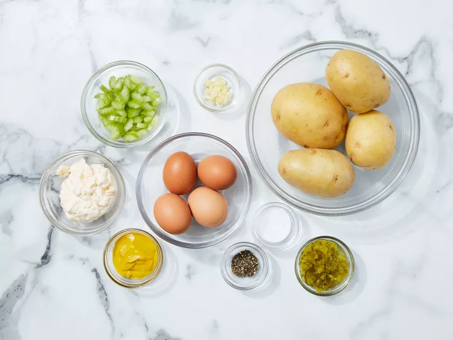

Potato salad

Potato salad
This salad bread recipe creates the most delicious, moist loaf with loads of potato flavor.
Why compromise the potato flavor? Friends and family love my recipe and say it's by far the best! It tastes wonderful toasted. Enjoy!
Potato Salad Ingredients
You likely already have all the ingredients you'll need for this potato salad recipe on hand. If not, here's what to add to your grocery list:
- 4 potatoes
- 4 large eggs
- ½ cup mayonnaise
- ½ stalk celery, chopped
- ¼ cup sweet relish
- 1 clove garlic, minced
- 2 tablespoons prepared mustard
- salt and pepper to taste.
How to Make potato salad
You'll find the full, step-by-step recipe below — but here's a brief overview of what you can expect when you make this simple potato salad
- Combine the dry ingredients in one bowl.
- Bring a large pot of salted water to a boil. Add potatoes and cook until tender but still firm, about 15 minutes; drain and chop
- At the same time, place eggs in a saucepan and cover with cold water. Bring water to a boil; cover, remove from heat, and let eggs stand in hot water for 10 to 12 minutes. Remove from hot water; peel and chop.
- Combine cooked potatoes and eggs with mayonnaise, celery, relish, garlic, mustard, salt, and pepper in a large bowl.